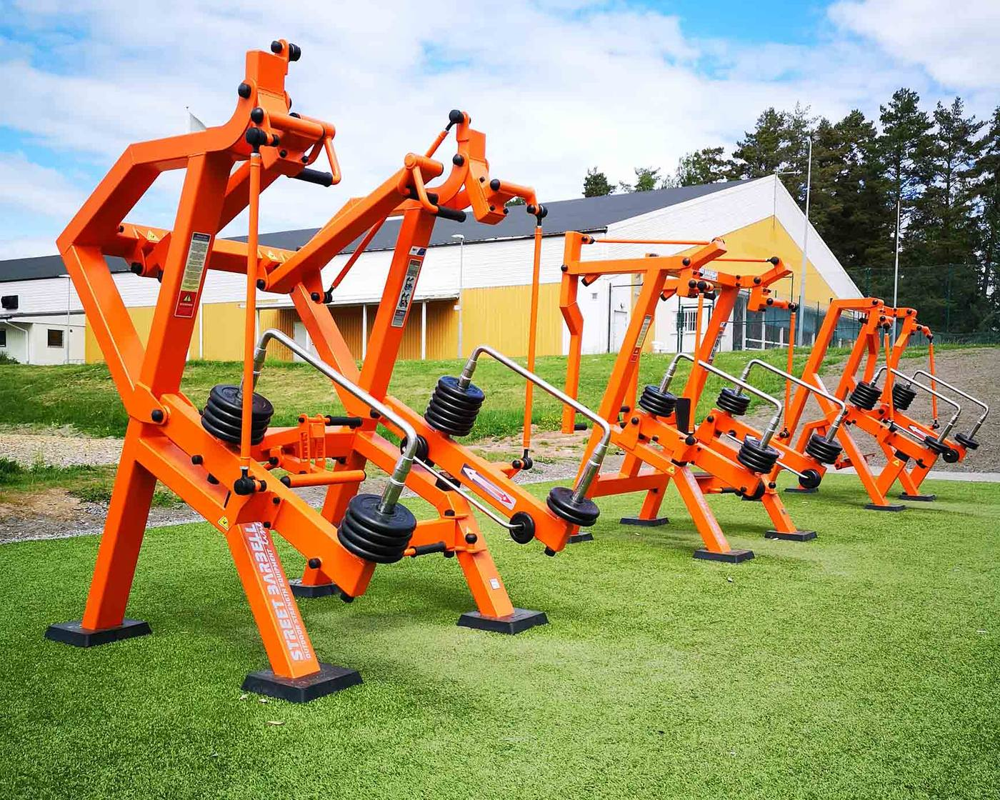
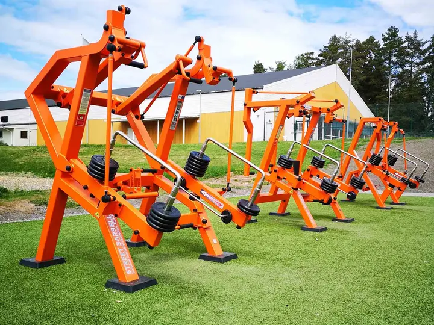
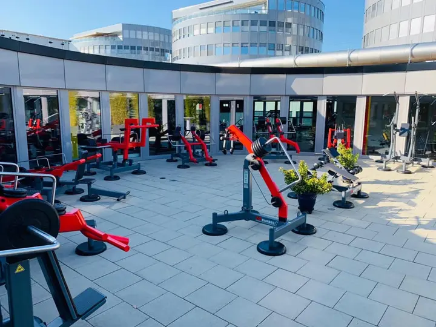
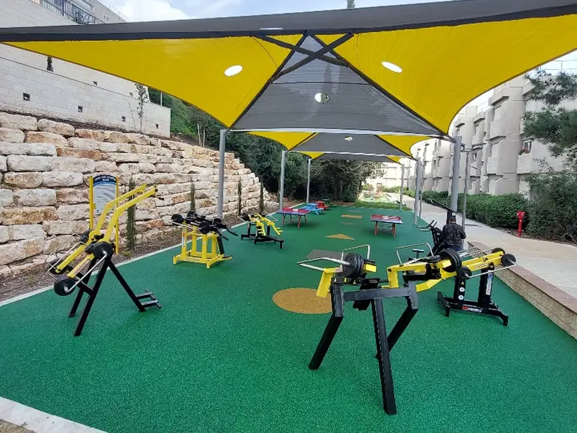
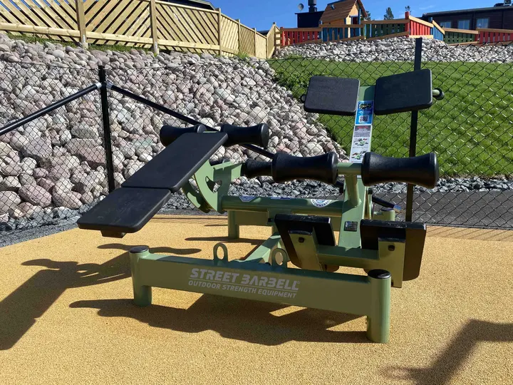
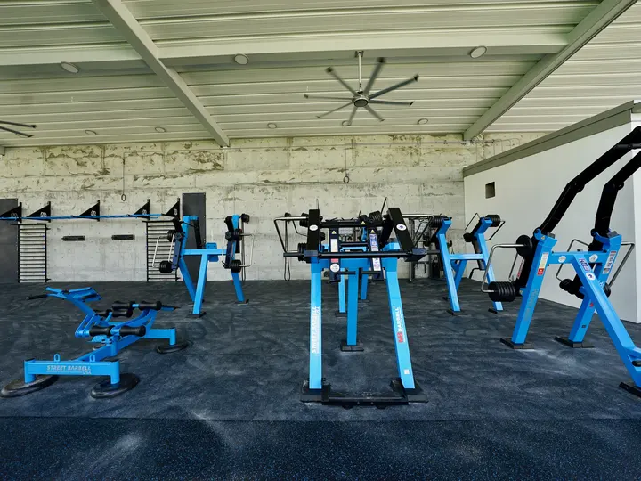
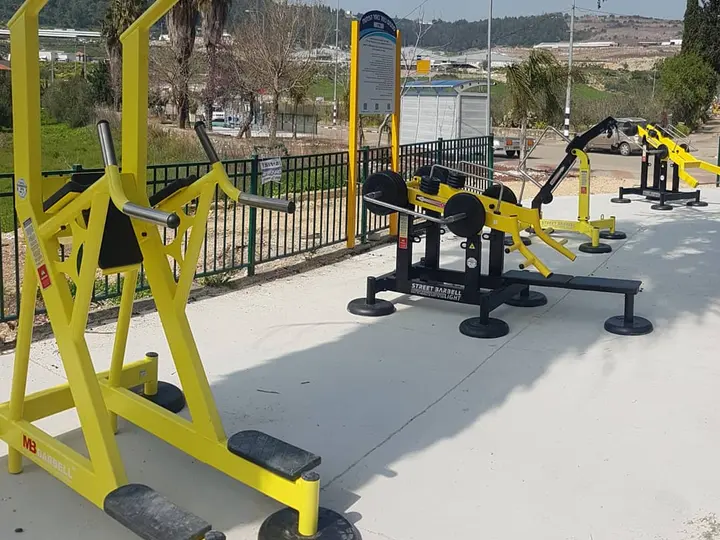

Ostala ponuda
Sportska oprema · StreetBarbell
Teretana na otvorenom sa pravim tegovima. Finska StreetBarbell oprema, ispitana po standardu EN 16630 — planiramo, isporučujemo i montiramo za opštine, škole, hotele i stambene komplekse.

Zašto 5TO9
Opterećenje se podešava tegovima direktno na spravi — pravi trening snage napolju, za početnike i sportiste. Sistem je 2016. bio nominovan za nagradu za inovaciju na sajmu FIBO.
TÜV Thüringen je ispitao Standard, Light, Plus i Workout linije po standardu DIN EN 16630 za trajno montiranu opremu za vježbanje na otvorenom.
Čelični ram sa zaštitom od korozije, nerđajući čelik, zaptiveni ležajevi i sjedišta od izdržljivog poliuretana. Garancija na ram do 10 godina.
Na svakoj spravi je tabla sa vježbama i QR kodom koji vodi do video lekcija profesionalnih trenera.
Oprema · StreetBarbell
Od sprava sa tegovima i street workout konstrukcija do opreme za djecu i korisnike u invalidskim kolicima — kombinujemo linije prema prostoru i korisnicima.
26 sprava · Stojeće vježbe
Pogledaj proizvod →
22 sprave · Maksimalna stabilnost
Pogledaj proizvod →
9 sprava · Za korisnike u kolicima
Pogledaj proizvod →
12 sprava · Povećano opterećenje
Pogledaj proizvod →
19 elemenata · Street workout
Pogledaj proizvod →
17 sprava · Težina tijela i kardio
Pogledaj proizvod →
7 sprava · Za djecu od 6 godina
Pogledaj proizvod →
3 sprave · Boks na otvorenom
Pogledaj proizvod →
Novo · Bicikli
Pogledaj proizvod →
Prevucite za još →
Boje
Ram i pokretni djelovi mogu biti u istoj ili kontrastnoj boji — standardne RAL boje ili bilo koja RAL boja po dogovoru. Zaštita: plastifikacija, termoplastika ili vruće cinkovanje.






Za koga
Outdoor teretane u parkovima, na šetalištima i uz sportske terene.
Street workout i trening snage za učenike, studente i sekcije; Kids linija za najmlađe.
Plus linija sa sklopivim sjedištem, za korisnike u invalidskim kolicima.
Teretana na otvorenom kao sadržaj za goste.
Zajednički prostor za vježbanje stanara i zaposlenih.
Kako radimo
Procjenjujemo prostor, podlogu i očekivani broj korisnika.
Predlažemo kombinaciju sprava, raspored zone i boje rama i pokretnih djelova.
Sprave postavljamo na betonske ploče ili blok temelje; Light linija može i bez ankerisanja.
Uz predaju dobijate plan održavanja — pregled i servis preporučuju se dva puta godišnje.
Česta pitanja
Da. Standard, Light, Plus i Workout linije ispitane su po standardu DIN EN 16630 za trajno montiranu opremu za vježbanje na otvorenom (TÜV Thüringen, sertifikat br. 3510.02586.Z01). Dokumentaciju za izabrane sprave dostavljamo uz ponudu.
Svaka sprava ima tegove koji se podešavaju direktno na njoj, pa korisnik bira opterećenje kao u teretani — od lakog do ozbiljnog trening snage. Sistem je patentiran.
Na ram 5 godina (plastifikacija ili termoplastika), odnosno 10 godina uz vruće cinkovanje; na pokretne metalne djelove 3 godine. Garancija važi uz redovno održavanje po uputstvu proizvođača.
Da. Sprave se rade u standardnim RAL bojama, a po dogovoru i u bilo kojoj RAL boji. Ram i pokretni djelovi biraju se odvojeno.
Da. Plus linija (9 sprava) ima fiksno sklopivo sjedište, pa je mogu koristiti i korisnici u invalidskim kolicima.
Sprave se postavljaju na betonske ploče ili blok temelje ispod stopa; Light linija može i bez ankerisanja. Tačno rješenje određujemo nakon obilaska lokacije.
Da. Radimo sa školama, opštinama i institucijama, uključujući postupke javnih nabavki, i pripremamo potrebnu tehničku dokumentaciju.
Cijena zavisi od izbora sprava, njihovog broja, završne obrade i lokacije. Pošaljite upit i odgovaramo sa prijedlogom i ponudom.
Upit
Pošaljite nam lokaciju, veličinu prostora i kome je namijenjen — odgovaramo sa prijedlogom sprava, rasporedom i ponudom.
Ostala ponuda